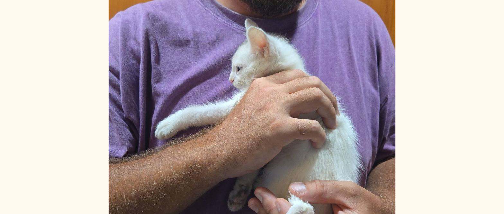
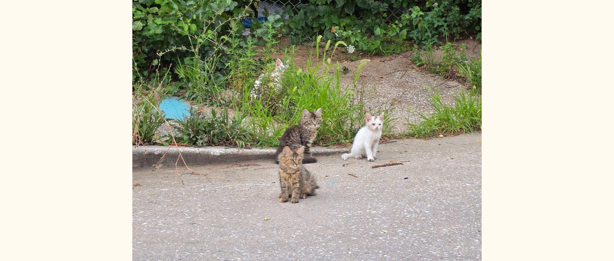
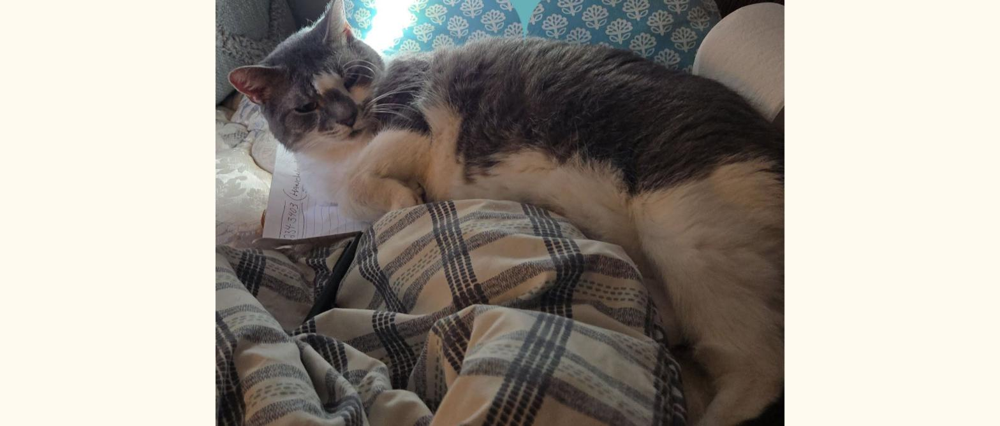
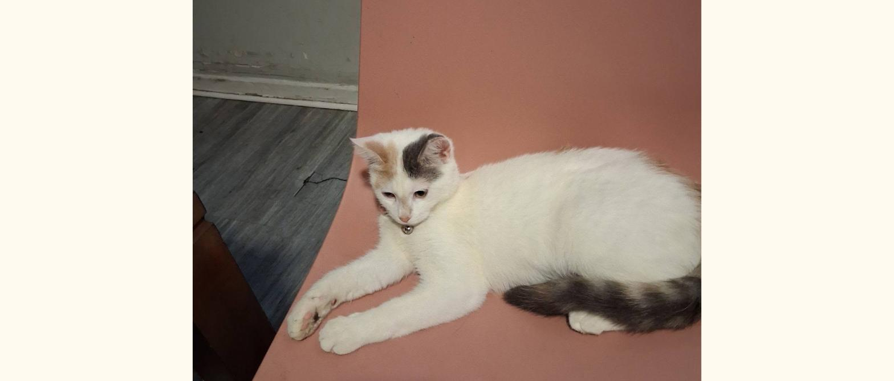
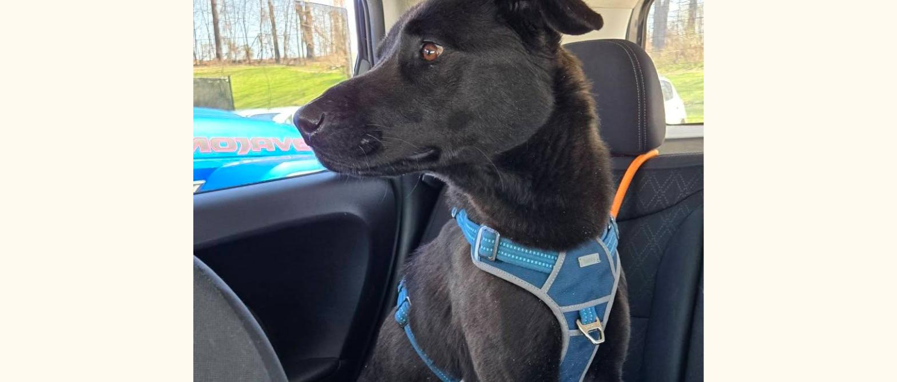

Maryland Fur Babies
Everything a reporter, partner or fellow rescue needs to cover us accurately: boilerplate, verifiable facts, the founder's story, photos and a logo you can use without asking.
At a glance
Verify us: Candid / GuideStar profile ↗ · IRS Tax Exempt Organization Search ↗ (enter EIN 83-4101673)
Boilerplate
Short (1 sentence): Maryland Fur Babies is a family-run 501(c)(3) animal rescue in Baltimore that feeds, treats and finds safe homes for stray and abandoned animals, funded entirely by small donations.
Standard (1 paragraph): Maryland Fur Babies is an all-volunteer 501(c)(3) animal rescue based in Baltimore, Maryland. It began when founder Carole Ridgell, a senior living on a fixed income, started feeding and protecting the stray cats in her neighborhood. Today the organization provides food, litter, flea and tick treatment, vaccines, spay/neuter and emergency veterinary care for community cats, dumped kittens and other animals in need, working alongside fosters and local rescue partners. There are no salaries and no office: every dollar donated goes to the animals. Donations are tax-deductible (EIN 83-4101673) and can be made at marylandfurbabies.org.
The story in brief
Carole didn't set out to start a nonprofit. She saw hungry cats behind her house and started putting food out. Then came the kittens someone dumped on the curb, the cat with the infected tail, the colony nobody else was feeding. The food bill and vet bills grew faster than a fixed income could carry, so her family formed Maryland Fur Babies in 2019 so the community could help share the cost.
In summer 2026 Carole's Facebook post about four kittens abandoned on a Baltimore street reached more than 6,000 people and was shared over 450 times; all four kittens were trapped and placed in foster homes within days. A photo of the family with Tweety, a kitten thrown from a moving car who needed emergency care, was used by Baltimore's Show Your Soft Side to launch Project Kitty Angel, a city-wide trap-neuter-return initiative for Baltimore's estimated 82,000 street cats.
Maryland Fur Babies focuses on the animals already in its care and in its immediate community; it does not take intake, adoption or placement requests online.
What donations pay for
$10 buys a bag of food or litter for a colony. $25 covers flea, tick and deworming treatment for one animal. $100 helps cover a spay/neuter surgery or a vet visit. Monthly gifts keep the food bowls full in quiet months.
Coverage & recognition
Photos
Free to use in coverage of Maryland Fur Babies with the credit "Photo: Maryland Fur Babies". Click to open full size.

Tweety, thrown from a car, safe in our arms
The four kittens dumped in Baltimore Founder Carole Ridgell
Precious
Kitten in care
Not just catsLogo
Right-click to save. Please don't alter the colors or stretch the logo.